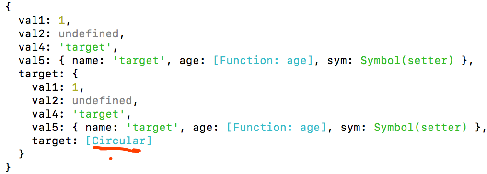

简介
在上篇文章中我们深入了解了JSON.parse/JSON.stringify，并且自己实现了一个JSON.parse/JSON.stringify，在这篇文章中我们要自己实现一个深拷贝，并且解决JSON.parse/JSON.stringify中出现的问题。
递归实现
实现目标
- 我们通过递归实现一个简单的深拷贝
- 判断
Object和Array
实现步骤
- 提前声明一个判断类型函数
getType - 声明函数
cloneDeep，首先判断原对象是否为object类型，如果不是直接返回原值 - 声明一个新的目标对象
newTarget，它的类型根据入参决定（Array、Object） - 通过
for...in循环原对象，并且通过hasOwnProperty判断属性是否为本身属性 - 如果是本身属性递归调用
cloneDeep - 最后返回新对象
newTarget
1 | // 获取当前类型 |
测试效果图如下：

在上面的代码中，已经解决了JSON.stringify/JSON.parse中的忽略undefined/function的问题，下面会逐渐解决问题，并且优化到类似与lodash库中的问题。
循环引用
实现目标
- 解决循环引用对象问题
- 解决引用丢失问题
实现步骤
- 首先了解
Map、WeakMap是什么 - 通过
Map、WeakMap、Array储存属性对象 - 如果再次使用，直接从
Map、WeakMap中取出(这样既解决了循环引用，又解决了引用丢失)
测试循环引用代码：
1 | const target = { |
执行效果如下图所示：
Map/weakMap
Map和WeakMap都是 ES6 中的新出的数据类型。如果有兴趣可以去WeakMap mdn和Map mdn，或者Set 和 Map 数据结构去了解它们的api和使用场景等。
Map
Map对象保存键值对。任何值(对象或者原始值) 都可以作为一个键或一个值。
语法
new Map([iterable])
iterable:Iterable可以是一个数组或者其他iterable 对象，其元素为键值对(两个元素的数组，例如:[[ 1, 'one' ],[ 2, 'two' ]])。 每个键值对都会添加到新的Map。null会被当做undefined。
常用方法
Map.prototype.get(key): 返回键对应的值，如果不存在，则返回undefined。Map.prototype.set(key, value): 设置Map对象中键的值。返回该Map对象。Map.prototype.has(key): 返回一个布尔值，表示Map实例是否包含键对应的值。Map.prototype.delete(key): 如果Map对象中存在该元素，则移除它并返回true；否则如果该元素不存在则返回false。
这里只介绍了常用的操作方法，Map还有循环方法、其他方法等等。
实例
1 | var oneMap = new Map(); |
WeakMap
WeakMap 对象是一组键/值对的集合，其中的键是弱引用的。其键必须是对象，而值可以是任意的。
它的语法、参数与Map是一至的，只有两点区别：
WeakMap只接受对象作为键名（null除外），不接受其他类型的值作为键名。WeakMap弱引用的只是键名，而不是键值。键值依然是正常引用。
同时WeakMap只有上面get/set/has/delete四种方法，其它的方法它都是没有的。
实例
1 | const map = new WeakMap(); |
这里就不测试它的操作方法了，它的操作方法与Map一至。
通过 Map 解决
在这里我们通过Map来解决循环引用，修改代码如下：
1 | // 声明一个函数 |
执行测试代码如下：

我们可以看到target变为一个Circular类型的对象，这个是在node环境中运行的，如果在浏览器对还是会报错（爆栈）。
到这里我们只做到了让他没有报错，但是也并没有完美的解决循环引用的问题，下面就要到WeakMap登场了。
WeakMap 解决
上面我们已经讲解过Map和WeakMap的不同点和相同点，为什么说WeakMap在解决循环引用会比Map好很多呢，就是因为WeakMap它的键值是弱引用的。
什么是弱引用，即垃圾回收机制不考虑 WeakMap 对该对象的引用，也就是说，如果其他对象都不再引用该对象，那么垃圾回收机制会自动回收该对象所占用的内存，不考虑该对象还存在于 WeakMap 之中。
要深入理解弱引用这个又会涉及到Node和JavaScript底层垃圾回收机制，因为它们的垃圾回收机制都是使用的标记法，又分为新生代和老生代，所以这里就不多做赘述了。后面会有一系列文章来讲述Node和JavaScript中的相同和异同点。
修改代码如下：
1 | // 只是把Map修改为WeakMap |
这样无论是在浏览器端还是node中都可以正常的运行。
类型问题
我们在上面只考虑了Array/Object其实就是Object类型的数据处理，其他的数据都是走的直接返回。
- 改写
Object的判断，并且分别处理Array/Object方法 - 处理
Function - 处理
Symbol - 处理
不可循环类型（Number/String/Date/Boolean） - 处理
RegExp/Map/Set
我们就按上面的步骤一步一步分拆不同类型走不同的处理，已解决在JSON.stringify遇到的问题。
Object 类型判断
在上面的代码中我们只是简单的判断了Object，如果不是Object直接返回，其实是没有考虑到null这个特殊情况的。我们现在就要加上null的怕判断并且后面也要独立处理Function类型的copy。
实现目标：
null的判断function的判断Array/Object的分别处理
代码实现：
1 | // 新增判断属性 |
Function
function处理：
其实即使function指向同一个内存地址，他也是没有任何问题的，所以可以直接可以返回return value。
1 | const isFunc = typeof value === 'function'; |
Symbol
数据类型 “symbol” 是一种原始数据类型，该类型的性质在于这个类型的值可以用来创建匿名的对象属性。
我们可以拷贝symbol类型的属性名？
首先我们可以通过typeof、Object.prototype.toString.call()来检测symbol的类型，但是我们怎么获取到symbol.
示例代码
1 | var test = Symbol('name'); |
我们可以通过两种方法获取的到symbol.
Object.getOwnPropertySymbols(...):Object.getOwnPropertySymbols(...)可以查找一个给定对象的符号属性时返回一个symbol类型的数组。Reflect.ownKeys(...): 返回一个由目标对象自身的属性键组成的数组。
注意： 每个初始化的对象都是没有自己的 symbol 属性的，因此这个数组可能为空，除非你已经在对象上设置了 symbol 属性。
Reflect.ownKeys(...)的返回值等同于Object.getOwnPropertyNames(target).concat(Object.getOwnPropertySymbols(target))。
示例代码
1 | var sName = Symbol('name'); |
这个只能获取到当前的值，但是我们怎么拷贝这个属性呢？
我们可以通过valueOf来获取symbol的原始值，然后再复制当前的属性和值。valueOf()方法返回当前 symbol 对象所包含的 symbol 原始值。
1 | function cloneSymbol(symbol) { |
不可循环类型
我们常用的不可循环的类型，比如Number/String/Date/Boolean，如果是一些字面量直接赋值给新的对象也是没有问题，但是我们通过创建一个新的对象自然更好。
1 | function cloneStatic(target) { |
RegExp/Map/Set
首先处理RegExp正则，我们这里直接使用lodash中的，其实和静态的方法类似，都是生成一个新的RegExp对象。
1 | function cloneRegExp(regexp) { |
Map/Set
我们要考虑Map/Set类型的处理，因为它们也是可以循环的，并且他们可以的key-value也可以为可循环的值。
1 | function cloneMap(target) { |
总结
我们考虑了大部分类型的实现，下面是完整的代码：
1 | // <!------------工具函数开始----------------------------!> |
执行结果：

性能问题
在上面我们使用的循环是for...in，但是他的性能并不是最高的，我们现在来对比一下for...in、for、while、forEach三个循环谁的速度更快。
我们可以通过每个循环100000次，在浏览器端通过console.time()、console.timeend()统计当前执行的循环效率。代码如下：
1 | // 生成数据 |
多次执行效果相差不多，执行效果如下：
图上的四个时间分别对应的顺序是：
for: 2.8msfor...in: 17.7mswhile: 4.4msforEach: 45.2ms
这个测试环境是在mac pro i7 16G、Chrome 78.0.3904.87这个进行的只是简单测试，大致结果for > while > for...in > forEach。
但是我看到lodash中是用的while，并且别人测试的是和我测试相反的。这里就不再多做追究了，免的喧宾夺主后面会独立一篇文章好好探讨一下谁的速度更快。
我们也通过while改写代码吧。
1 | function arrayEach(array, iteratee) { |
修改循环逻辑的代码如下
1 | // 原代码如下 |
测试代码
1 | // 实例化symbol |
分开测试执行时间相差是1ms-2ms，其实并不相差太大，不能一起测试，因为一起测试的话，第一次执行的一些变量会被储存在内存中，第二次执行的速度自然会很快，所以一起测试的时间并不准确。
递归爆栈
我们测试使用的数据深度为100，广度为1000，这样还是不会造成递归爆栈，但是当我们把深度广度都提升到10000次就会造成递归爆栈。
解决递归爆栈的方法有三种：
- 加大阈值
- 循环改写
- 尾递归优化
因为JavaScript是会运行在浏览器端的，我们不能加大它的内存占用。
以前在V8中是已经是实现了尾递归的，但是它会影响JavaScript的栈的调用顺序，所以最后又删除掉了。
如果有兴趣可以去看我另一篇文章尾递归
我们这里只用循环实现防止递归爆栈。
当我们的对象层级特别深事，我们通过递归循环时，会造成递归爆栈，因为一些临时变量会储存在堆栈中，通多深层递归调用，它们的不会被回收，当调用的层级越深自然储存的就越多，最后会导致栈储存不下，也就会造成递归爆栈。
我们可通过自己创建一个栈，栈中储存当前要拷贝的节点，一层一层往下拷贝，所以是一个深度优先的优化。
1 | function cloneLoop(x) { |
详细内容见深拷贝的终极探索
到此就一个深拷贝就结束了
全文总结
我们是在原来的基础上一步一步优化我们自己的深拷贝实现，但是最后的递归爆栈如果在当前文章书写的话，会让当前文章很乱，所以会独立出来一篇文章来记录什么是斐波拉契数列相关的。
我们的大致实现步骤是：
- 用递归实现一个简单的深拷贝
- 考虑循环引用问题，通过
WeakMap解决 - 考虑类型问题，处理
Function、Map、Set等等 - 考虑性能问题，递归爆栈问题
到此基本上就实现一个可以使用的深拷贝。